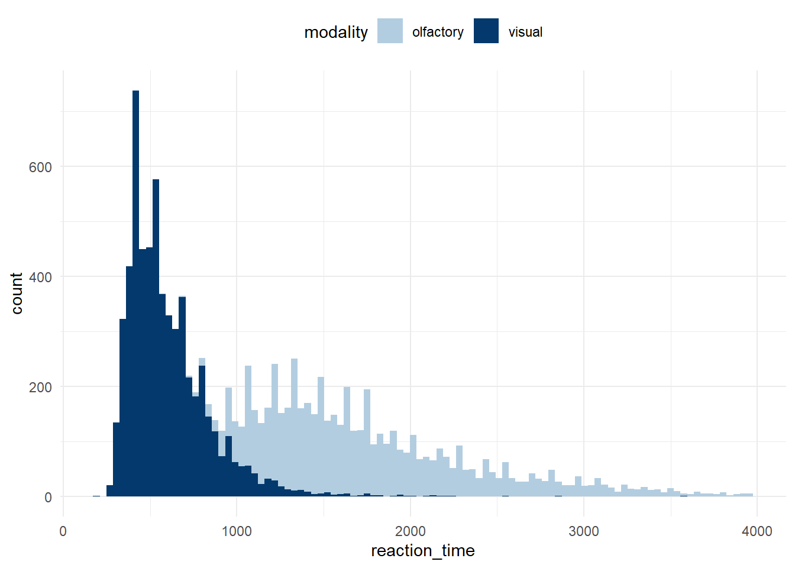
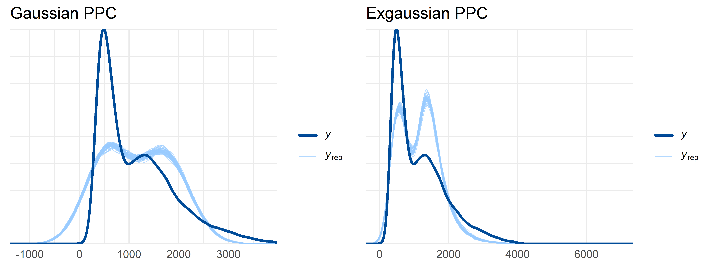
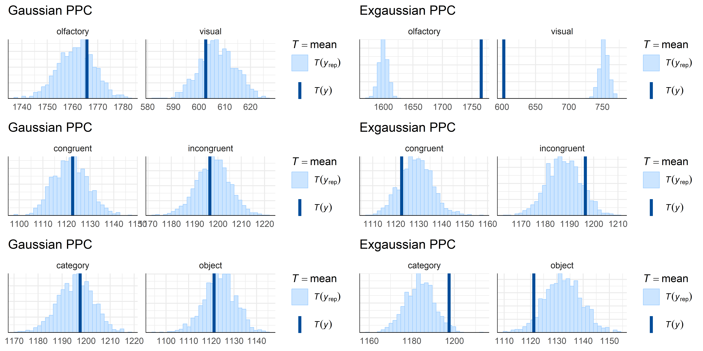
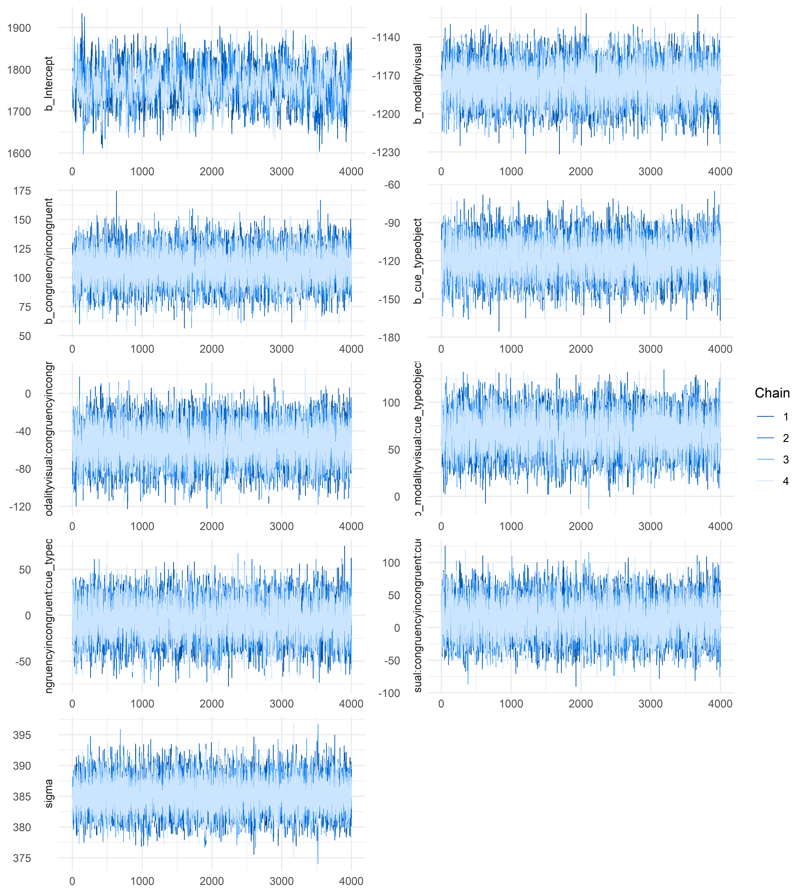
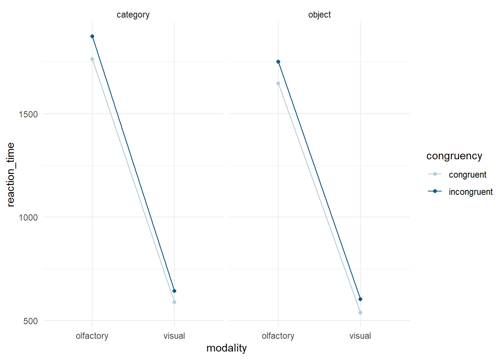
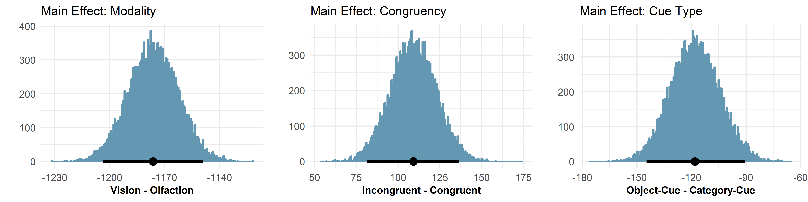
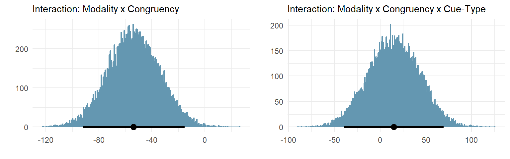
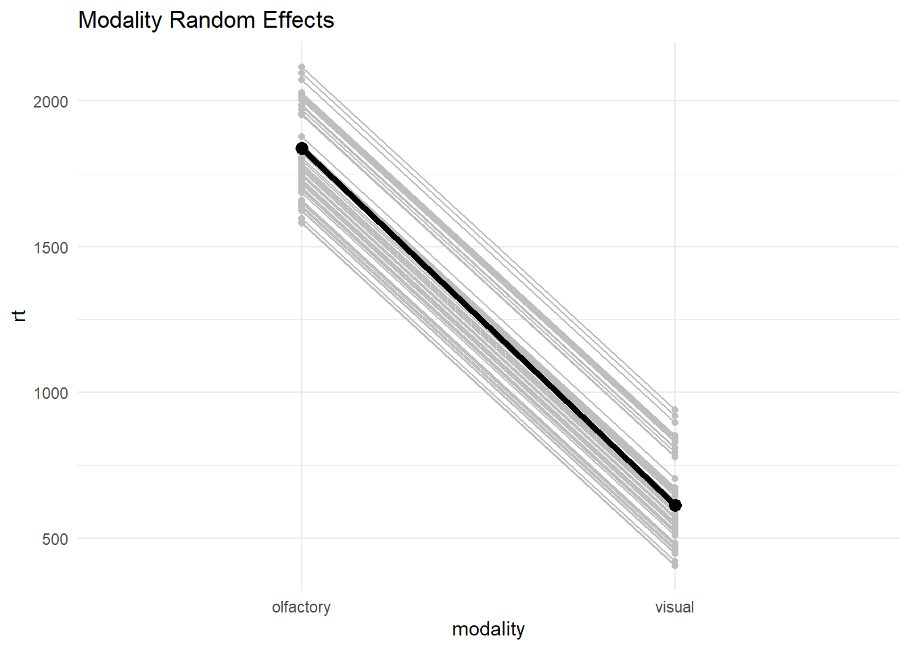
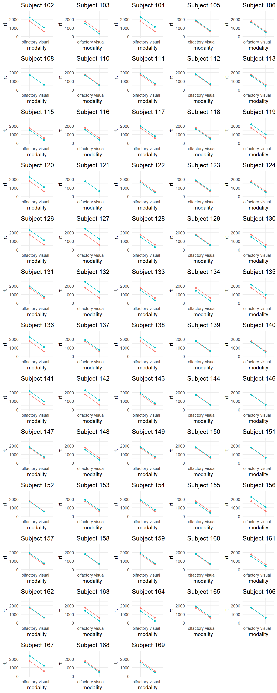

# load variables that are saved outside R
load("C:/Users/STPI0560/Desktop/Archieve/Stat 2.5/assignment/workspace/assignmentworkspace.RData")Journal Of Neuroscience: Bayesian Reanalysis
Project Overview
The data I am analysing comes from a paper I recently published in the Journal Of Neuroscience (https://www.jneurosci.org/content/44/22/e1232232024). The paper involves 3 experiments, of which I am only analysing data from the first. I have chosen this study because I actually wanted to do a Bayesian analysis originally, and wanted to do a random effects model as well. We opted for a Frequentist analysis and a 3-way ANOVA. Here I will perform the same analyses using a Bayesian random-effects model.
Short Introduction
People are notoriously bad at identifying odors. Herrick (1993) noted that the olfactory cortex of most species is large, relative to other areas, and it is only in humans that the olfactory epithelium becomes dwarfed by the neocortex. This is likely do to evolution favoring cognitive capabilities, along with senses more important to our lives, like vision. Herrick hypothesized that, because the human olfactory cortex still contains dense interconnectivity with other sensory modalities, that maybe olfaction relies on other senses to help with olfactory identification and localization. Additionally, a recent study found that when people describe different types of sensory stimuli, all but olfaction are described abstractly (i.e. bright). Olfactory stimuli alone Are described as object-based (i.e. lemon).
Participant Information
After removing some participants for poor performance, this dataset includes 63 participants (40 female; age range: 18-65; mean age: 32 years) total.
Hypotheses
We developed a behavioural task where people listened to a predictive cue, were presented with a target, and then had to determine whether the cue and target matched or did not match. The cue was delivered by a voice, and the target was either visual or olfactory. The cue could also be object-based (i.e. lemon) or category-based (i.e. fruit). The targets consisted of 4 stimuli: lavender, lilac, lemon, pear. These could be presented both visually and in an olfactory manner. We hypothesized that, if olfaction requires information from another sensory modality, that their would be a large disparity in reaction time between matching (congruent) and non-matching (incongruent) cues and targets. We further hypothesized that this disparity would not be seen when the targets were visual. We also hypothesized that, in olfaction, this disparity would be larger when the cues were object-based, rather than category based.
Predictions
Their are several predictions that are important for this assignment. First, we predicted much slower responses to olfactory targets. We also predicted participants would be slower at responding when cues and targets did not match. We further predicted that this slowness in responding to cues and targets that were incongruent would be larger when the targets were olfactory. Finally, we predicted that, in olfaction, people would respond more slowly to incongruent cues/targets whe nthe cues were object-based.
Set Up Workspace
Here I am just initializing my workspace.
Load Global Environment
Load Libraries
# load libraries
library(tidyverse)
library(kableExtra)
library(brms)
library(bayesplot)
library(tidybayes)
library(ggpubr)
library(gridExtra)Set ggplot Theme And Color Scheme
# set ggplot theme
theme_set(theme_minimal())
# set ggplot colors
colors <- c("#d1e1ec", "#b3cde0", "#6497b1", "#005b96", "#03396c", "#011f4b")The Data
Example Dataframe
Below is an example for how one participants’ data might look. These data are fake, but provide an overview for how the data are organized.
# Fill dataframe with fake values for one participant
faketable <- data.frame(
row = c(1, 2, 3, 4, "...", 44, 45, 46, 47, "...", 82, 83, 84, 85, "...", 127, 128, 129, 130),
subject = c(rep(1, times = 4), "...", rep(1, times = 4), "...", rep(1, times = 4), "...", rep(1, times = 4)),
modality = c(rep("visual", times = 4), "...", rep("visual", times = 4), "...", rep("olfactory", times = 4), "...", rep("olfactory", times = 4)),
congruency = c(rep(c("congruent", "incongruent"), times = 2), "...",rep(c("congruent", "incongruent"), times = 2), "...", rep(c("congruent", "incongruent"), times = 2), "...",rep(c("congruent", "incongruent"), times = 2)),
cue_type = c(rep("object", time = 4), "...", rep("category", times = 4), "...", rep("object", time = 4), "...", rep("category", times = 4)),
auditory_cue = c("lavender", "lilac", "lemon", "pear", "...", "flower", "flower", "fruit", "fruit", "...", "lavender", "lilac", "lemon", "pear", "...", "flower", "flower", "fruit", "fruit"),
target = c("lavender", "lavender", "lemon", "lemon", "...", "lavender", "pear", "lemon", "lilac", "...", "lavender", "lavender", "lemon", "lemon", "...", "lavender", "pear", "lemon", "lilac"),
reaction_time = c(564, 740, 602, 557, "...", 471, 649, 668, 519, "...", 1121, 1576, 1844, 1343, "...", 1876, 1265, 1721, 1846)
)
# display fake dataframe with nice kable styling
faketable %>%
kbl(caption = "Example dataframe") %>%
kable_classic(full_width = F, html_font = "Cambria")| row | subject | modality | congruency | cue_type | auditory_cue | target | reaction_time |
|---|---|---|---|---|---|---|---|
| 1 | 1 | visual | congruent | object | lavender | lavender | 564 |
| 2 | 1 | visual | incongruent | object | lilac | lavender | 740 |
| 3 | 1 | visual | congruent | object | lemon | lemon | 602 |
| 4 | 1 | visual | incongruent | object | pear | lemon | 557 |
| ... | ... | ... | ... | ... | ... | ... | ... |
| 44 | 1 | visual | congruent | category | flower | lavender | 471 |
| 45 | 1 | visual | incongruent | category | flower | pear | 649 |
| 46 | 1 | visual | congruent | category | fruit | lemon | 668 |
| 47 | 1 | visual | incongruent | category | fruit | lilac | 519 |
| ... | ... | ... | ... | ... | ... | ... | ... |
| 82 | 1 | olfactory | congruent | object | lavender | lavender | 1121 |
| 83 | 1 | olfactory | incongruent | object | lilac | lavender | 1576 |
| 84 | 1 | olfactory | congruent | object | lemon | lemon | 1844 |
| 85 | 1 | olfactory | incongruent | object | pear | lemon | 1343 |
| ... | ... | ... | ... | ... | ... | ... | ... |
| 127 | 1 | olfactory | congruent | category | flower | lavender | 1876 |
| 128 | 1 | olfactory | incongruent | category | flower | pear | 1265 |
| 129 | 1 | olfactory | congruent | category | fruit | lemon | 1721 |
| 130 | 1 | olfactory | incongruent | category | fruit | lilac | 1846 |
Load Data
The data I am using is a single .csv file from our previous experiment. These data were pre-processed in a separate R script that took each individual participants’ data and combined them into a single dataframe. The data are not aggregated, so they still represent the participants’ raw data. However, 5 participants were removed for having very low accuracy in the task. Additionally, we were only interested in trials where participants’ correctly determined whether the cue and target matched/did not match. Thus, these data only represent “correct” trials. Additionally, all participants’ in this dataset had at least 80% accuracy across the study.
# load data
df <- read.csv(file = "C:/Users/STPI0560/Desktop/Archieve/Stat 2.5/assignment/data/object_category.csv", header = TRUE)
# glimpse first few rows
head(df) participant modality congruency cue_type cue target reaction_time
1 101 visual incongruent object Pear Lavender 1933.3277
2 101 visual congruent object Pear Pear 400.3761
3 101 visual congruent object Lemon Lemon 500.3686
4 101 visual incongruent object Lilac Pear 833.7295
5 101 visual congruent object Lilac Lilac 533.7733
6 101 visual congruent object Lavender Lavender 883.7940Some columns need to be changed to factors for the analysis.
# Columns to convert to factors
cols_to_factor <- c("participant", "modality", "congruency", "cue_type", "cue", "target")
# Convert specified columns to factors
df[cols_to_factor] <- lapply(df[cols_to_factor], as.factor)First, I wanted to plot the distribution of the dependent variable (reaction time) for both visual and olfactory target trials. This is because reaction time is often skewed. If the distributions are indeed skewed, I may want to model them using an Exgaussian distribution.
# Add mean lines
ggplot(df, aes(x=reaction_time, fill = modality)) +
geom_histogram(bins = 100)+
theme(legend.position="top") +
scale_fill_manual(values = c(colors[2], colors[5]))
They definitely appear skewed. Thus, I will take that into account with my model. However, I want to try both an Exgaussian and Gaussian model. I will then see how well each model recovers the distribution of the dependent variable using a Posterior Predictive Check (PPC).
Bayesian Hierarchical Model
This model will be a 3-way factorial design. Originally we did not want to have a 3-way design as we believed we would be underpowered to detect a 3-way interaction. However, a reviewer insisted on adopting this approach. Thus, to match the original study, I will do that here. Here I want to see how target modality (visual, olfactory), cue/target congruency (congruent, incongruent), and cue-type (object-cue, category-cue) affect reaction time. Most importantly, I will look at the 2-way interaction between modality and congruency, and the 3-way interaction between modality, congruency, and cue-type.
I want to add a random intercept and random slopes for each target and each participant in the model. I believe my model should look something like what I have outlined below.
Notations
- \(Y_{ijk}\) : Reaction time for participant \(i\), condition \(j\), target \(k\).
- \(M_j\): Modality.
- \(C_j\): Congruency.
- \(T_j\): Cue_type.
- \({Target}_k\): Target.
Parameters
- \(\beta_0\): Intercept.
- \(\beta_1\): Coefficient for modality \(M\).
- \(\beta_2\): Coefficient for congruency \(C\).
- \(\beta_3\): Coefficient for cue_type \(T\).
- \(\beta_{12}\): Coefficient for \(M \times C\).
- \(\beta_{13}\): Coefficient for \(M \times T\).
- \(\beta_{23}\): Coefficient for \(C \times T\).
- \(\beta_{123}\): Coefficient for \(M \times C \times T\).
Random Effects
- \(u_{0i}\): Random intercept for participant \(i\).
- \(u_{1i}\): Random slope for target \(k\) by participant \(i\).
Model Equation
The full model equation is:
\(Y_{ijk} = \beta_0 + \beta_1 M_j + \beta_2 C_j + \beta_3 T_j + \beta_{12} (M_j \cdot C_j) + \beta_{13} (M_j \cdot T_j) + \beta_{23} (C_j \cdot T_j) + \beta_{123} (M_j \cdot C_j \cdot T_j) + u_{0i} + u_{1i} \text{Target}_k + \epsilon_{ijk}\)
Priors
- Coefficients:
- \(\beta_0 \sim \mathcal{N}(1200, 200)\)
- \(\beta_1 \sim \mathcal{N}(500, 100)\)
- \(\beta_2 \sim \mathcal{N}(200, 50)\)
- \(\beta_3 \sim \mathcal{N}(100, 50)\)
- \(\beta_{12}, \beta_{13}, \beta_{23}, \beta_{123} \sim \mathcal{N}(0, 1)\)
- Random effects:
- \((u_{0i}, u_{1i})^T \sim \mathcal{N}(0, \Sigma_u)\)
- \(Sigma_u\) is the covariance matrix of the random effects, where \(\Sigma_u \sim \text{LKJ}(2)\)
Residual Error
- \(\epsilon_{ijk} \sim \mathcal{N}(0, \sigma^2)\)
Where \(\text{ExGaussian}(\mu, \sigma, \tau)\) denotes the ex-Gaussian distribution with: - \(\mu\): Mean of the normal component. - \(\sigma\): Standard deviation of the normal component. - \(\tau\): Mean of the exponential component.
Additionally, \(\text{Gaussian}(\mu, \sigma)\) denotes the Gaussian distribution with: - \(\mu\): Mean of the normal component. - \(\sigma\): Standard deviation of the normal component.
The ex-Gaussian distribution combines a normal distribution with parameters \(\mu\) and \(\sigma\), and an exponential distribution with parameter \(\tau\). The Guassian distribution does not include the parameter \(\tau\). I am using both the Gaussian and ex-Gaussian distribution to model reaction time.
Gaussian model
Prior Predictive Check.
I want to use informative priors for my model as I have already conducted several other similar studies and have several ideas about how reaction times will differ between different conditions. My original plan was to conduct a Prior Predictive Check to see how my informative priors would generate reaction time data. However, this proved too difficult and time consuming. The Prior Predictive Check gave estimates of some pararmeters in the millions, while also having very low effective sample sizes (ess). Some of the ess values were as low as 20, even with 4 chains running for 10,000 iterations. I think the model is simply to complex for the number of iterations I would need to run for stable estimates. Therefore, I will be going ahead without a Prior Predictive Check.
Informative Priors
I decided to use informative priors as I have run several studies looking at modality and congruency regarding vision and olfaction. Those have been outlined in the Notation section above. I did not put informative priors on the interaction terms however, because it is very hard to predict exactly how they will turn out.
Fitting Gaussian Model in brm
First, I estimated the 3-way factorial model using a Gaussian distribution.
# run Gaussian model in brm
gaussian_model <- brm(
reaction_time ~ modality*congruency*cue_type + (target|participant),
data = df,
family = gaussian(),
prior = c(prior(normal(1200, 200), class = Intercept),
prior(normal(500, 100), class = b, coef = "modalityvisual"),
prior(normal(200, 50), class = b, coef = "congruencyincongruent"),
prior(normal(100, 50), class = b, coef = "cue_typeobject"),
prior(cauchy(0, 2), class = sd),
prior(cauchy(0, 2), class = sigma),
prior(lkj(2), class = cor)),
iter = 6000,
warmup = 2000,
file = "C:/Users/STPI0560/Desktop/Archieve/Stat 2.5/assignment/models/gaussian_model"
)Exgaussian Model
Next, I run an Exgaussian model. Everything is identical to the Gaussian model otherwise.
# run Exgaussian model in brm
exgaussian_model <- brm(
reaction_time ~ modality*congruency*cue_type + (target|participant),
data = df,
family = exgaussian(),
prior = c(prior(normal(1200, 200), class = Intercept),
prior(normal(500, 100), class = b, coef = "modalityvisual"),
prior(normal(200, 50), class = b, coef = "congruencyincongruent"),
prior(normal(100, 50), class = b, coef = "cue_typeobject"),
prior(cauchy(0, 2), class = sd),
prior(cauchy(0, 2), class = sigma),
prior(lkj(2), class = cor)),
iter = 6000,
warmup = 2000,
file = "C:/Users/STPI0560/Desktop/Archieve/Stat 2.5/assignment/models/exgaussian_model",
)Using informative priors with the Exgaussian model led to sever errors, with R-hat values over 3 and ess values as low as 5. Not shown here, I ran another Exgaussian model where I used the default priors brm gives you. This model did well, so I will use it from here.
Model Comparison
My plan was to first compare these models using the loo function. However, due to their complexity, I would need to redo both models and save the parameters as the models go. I have done this before and know it would take at least twice as long to run (sometimes longer). Given that the Exgaussian model took more than a day to complete, I just don’t have time. Instead I will let the PPC below guide my model selection.
Posterior Predictive Checks
Now that I have the two models, I want to see how each one recovers the dependent variable. I will perform a PPC on both models to see.
# get reaction time distribution
y <- df$reaction_time
# Draw 500 reaction time distributions from Gaussian model
yrep <- posterior_predict(gaussian_model, draws = 500)
# Draw 500 reaction time distributions from Exgaussian model
yrep_exgaus <- posterior_predict(exgaussian_model, draws = 500)# set color scheme
color_scheme_set("brightblue")
# gaussian ppc graph
gaussian_ppc <- ppc_dens_overlay(y, yrep[1:50, ]) + ggtitle("Gaussian PPC")
# exgaussian ppc graph
exgaussian_ppc <- ppc_dens_overlay(y, yrep_exgaus[1:50, ]) + ggtitle("Exgaussian PPC")
# Arrange the plots side by side
grid.arrange(gaussian_ppc, exgaussian_ppc, ncol = 2)
Neither model recovers the dependent variable perfectly, perhaps due to its bimodal nature. I would actually say that the Guassian performs slightly better here as it undershoots the first large bump (visual target peak responses), but almost matches the second smaller bump. The Exgaussian model overshoots the first bump, and then undershoots the second. I could standardize the predictors which might help with this fit. However, I do not actually like interpreting standardized coefficients since their are additional mental steps you need to take to understand the output. I would prefer to work with the unstandardized predictors, even if the PPC is not perfect.
I can also see how well the ppc recovers the mean reaction time split by different groups. I decided to check how well each model can represent the two means for modality, congruency, and cue-type.
# make 6 graphs, 3 for Guassian and 3 for Exgaussian
gaussian_modality_ppc <- ppc_stat_grouped(y, yrep[1:1000, ], group = df$modality, stat = "mean") + ggtitle("Gaussian PPC")
exgaussian_modality_ppc <- ppc_stat_grouped(y, yrep_exgaus[1:1000, ], group = df$modality, stat = "mean") + ggtitle("Exgaussian PPC")
gaussian_congruency_ppc <- ppc_stat_grouped(y, yrep[1:1000, ], group = df$congruency, stat = "mean") + ggtitle("Gaussian PPC")
exgaussian_congruency_ppc <- ppc_stat_grouped(y, yrep_exgaus[1:1000, ], group = df$congruency, stat = "mean") + ggtitle("Exgaussian PPC")
gaussian_cuetype_ppc <- ppc_stat_grouped(y, yrep[1:1000, ], group = df$cue_type, stat = "mean") + ggtitle("Gaussian PPC")
exgaussian_cuetype_ppc <- ppc_stat_grouped(y, yrep_exgaus[1:1000, ], group = df$cue_type, stat = "mean") + ggtitle("Exgaussian PPC")
# plot the 6 graphs in a 3 x 2 grid
grid.arrange(gaussian_modality_ppc, exgaussian_modality_ppc,
gaussian_congruency_ppc, exgaussian_congruency_ppc,
gaussian_cuetype_ppc, exgaussian_cuetype_ppc,
ncol = 2, nrow = 3)
It’s pretty clear that the Exgaussian model does not recover the dependent variable very well. Thus, I will continue the analysis using the Guassian model.
# remove ppc variables (they take up a lot of space)
rm(y)
rm(yrep)
rm(yrep_exgaus)Gaussian Model Diagnostics check
MCMC Traceplots
mcmc_trace(gaussian_model, pars = c("b_Intercept", "b_modalityvisual", "b_congruencyincongruent", "b_cue_typeobject", "b_modalityvisual:congruencyincongruent", "b_modalityvisual:cue_typeobject", "b_congruencyincongruent:cue_typeobject", "b_modalityvisual:congruencyincongruent:cue_typeobject", "sigma"),
facet_args = list(ncol = 2, strip.position = "left"))
All chains had Rhat values of 1, so I know they converged. This just gives a bit more visual evidence of that.
Gaussian Model Fixed Effect Estimates
Before looking at outputs, I want to discuss the model summary.
# select fixed-effects
gaussian_summary <- fixef(gaussian_model)
# display fake dataframe with nice kable styling
gaussian_summary %>%
kbl(caption = "Fixed-effect summary") %>%
kable_classic(full_width = F, html_font = "Cambria")| Estimate | Est.Error | Q2.5 | Q97.5 | |
|---|---|---|---|---|
| Intercept | 1763.80622 | 40.74753 | 1682.65982 | 1844.08140 |
| modalityvisual | -1176.19344 | 13.88879 | -1203.60028 | -1149.00212 |
| congruencyincongruent | 109.16309 | 13.97318 | 81.54296 | 136.55348 |
| cue_typeobject | -118.04836 | 13.74276 | -144.70101 | -90.69817 |
| modalityvisual:congruencyincongruent | -53.85335 | 19.57608 | -92.02107 | -15.15032 |
| modalityvisual:cue_typeobject | 67.15566 | 19.52747 | 28.77962 | 105.27742 |
| congruencyincongruent:cue_typeobject | -4.88533 | 19.87079 | -43.57404 | 33.98897 |
| modalityvisual:congruencyincongruent:cue_typeobject | 15.12504 | 27.86762 | -38.99643 | 69.25071 |
First, participants were 1176ms faster at responding to visual targets than they are olfactory targets. Participants are 109ms slower at responding to targets that do not match (incongruent) the cue compared to targets that do match (congruent) the cue. Participants are 118ms faster at responding to targets when an object-based cue precedes it compared to when a category cue precedes it. Participants are 54ms slower at responding to incongruent cue/target presentations, but only when the target is olfactory. The other effects overlap quite substantially with zero, so I will not go into detail regarding those. Additionally, all Rhat values were 1, and the effective sample sizes were very large. Below I display the full summary.
summary(gaussian_model) Family: gaussian
Links: mu = identity; sigma = identity
Formula: reaction_time ~ modality * congruency * cue_type + (target | participant)
Data: df (Number of observations: 11476)
Draws: 4 chains, each with iter = 6000; warmup = 2000; thin = 1;
total post-warmup draws = 16000
Multilevel Hyperparameters:
~participant (Number of levels: 64)
Estimate Est.Error l-95% CI u-95% CI Rhat Bulk_ESS
sd(Intercept) 258.65 24.50 216.31 311.55 1.00 2907
sd(targetLemon) 81.51 14.36 54.02 110.53 1.00 2563
sd(targetLilac) 103.74 14.65 76.74 133.59 1.00 2361
sd(targetPear) 51.47 29.29 0.37 94.40 1.00 455
cor(Intercept,targetLemon) -0.15 0.17 -0.46 0.20 1.00 2577
cor(Intercept,targetLilac) -0.06 0.17 -0.37 0.27 1.00 1796
cor(targetLemon,targetLilac) 0.77 0.11 0.51 0.93 1.00 3562
cor(Intercept,targetPear) -0.15 0.24 -0.56 0.45 1.00 6762
cor(targetLemon,targetPear) 0.32 0.29 -0.44 0.73 1.00 1442
cor(targetLilac,targetPear) 0.31 0.28 -0.44 0.71 1.00 1679
Tail_ESS
sd(Intercept) 5437
sd(targetLemon) 6648
sd(targetLilac) 8877
sd(targetPear) 1565
cor(Intercept,targetLemon) 7532
cor(Intercept,targetLilac) 6575
cor(targetLemon,targetLilac) 7012
cor(Intercept,targetPear) 2309
cor(targetLemon,targetPear) 1839
cor(targetLilac,targetPear) 1696
Regression Coefficients:
Estimate Est.Error l-95% CI
Intercept 1763.81 40.75 1682.66
modalityvisual -1176.19 13.89 -1203.60
congruencyincongruent 109.16 13.97 81.54
cue_typeobject -118.05 13.74 -144.70
modalityvisual:congruencyincongruent -53.85 19.58 -92.02
modalityvisual:cue_typeobject 67.16 19.53 28.78
congruencyincongruent:cue_typeobject -4.89 19.87 -43.57
modalityvisual:congruencyincongruent:cue_typeobject 15.13 27.87 -39.00
u-95% CI Rhat Bulk_ESS
Intercept 1844.08 1.00 847
modalityvisual -1149.00 1.00 11091
congruencyincongruent 136.55 1.00 11029
cue_typeobject -90.70 1.00 11197
modalityvisual:congruencyincongruent -15.15 1.00 10397
modalityvisual:cue_typeobject 105.28 1.00 9408
congruencyincongruent:cue_typeobject 33.99 1.00 10806
modalityvisual:congruencyincongruent:cue_typeobject 69.25 1.00 9653
Tail_ESS
Intercept 2107
modalityvisual 12780
congruencyincongruent 12235
cue_typeobject 13101
modalityvisual:congruencyincongruent 12388
modalityvisual:cue_typeobject 12467
congruencyincongruent:cue_typeobject 12816
modalityvisual:congruencyincongruent:cue_typeobject 12229
Further Distributional Parameters:
Estimate Est.Error l-95% CI u-95% CI Rhat Bulk_ESS Tail_ESS
sigma 385.21 2.66 380.06 390.50 1.00 15627 11084
Draws were sampled using sampling(NUTS). For each parameter, Bulk_ESS
and Tail_ESS are effective sample size measures, and Rhat is the potential
scale reduction factor on split chains (at convergence, Rhat = 1).Next I am calculating all possible estimated reaction times from the model depending on modality, congruency, and cue type. I am not going into detail below about why certain reaction time estimates are the result of specific combinations of coefficients. Hopefully it will be obvious based on whether each categorical predictor represents 0 or 1.
olfactory congruent category = \(\beta_{0}\) = 1763.81
visual congruent category = \(\beta_{0} + \beta_{1}x_{i1}\) = 1763.81 + (-1176.19) = 587.62
olfactory incongruent category = \(\beta_{0} + \beta_{2}x_{i2}\) = 1763.81 + 109.16 = 1872.97
visual incongruent category = \(\beta_{0} + \beta_{1}x_{i1} + \beta_{2}x_{i2} + \beta_{4}x_{i1}x_{i2}\) = 1763.81 + (-1176.19) + 109.16 + (-53.85) = 642.93
olfactory congruent object = \(\beta_{0} + \beta_{3}x_{i3}\) = 1763.81 + (-118.05) = 1645.76
visual congruent object = \(\beta_{0} + \beta_{1}x_{i1} + \beta_{3}x_{i3} + \beta_{5}x_{i1}x_{i3}\) = 1763.81 + (-1176.19) + (-118.05) + 67.16 = 536.73
olfactory incongruent object = \(\beta_{0} + \beta_{2}x_{i2} + \beta_{3}x_{i3} + \beta_{6}x_{i2}x_{i3}\) = 1763.81 + 109.16 + (-118.05) + -4.89 = 1750.03
visual incongruent object = \(\beta_{0} + \beta_{1}x_{i1} + \beta_{2}x_{i2} + \beta_{3}x_{i3} + \beta_{4}x_{i1}x_{i2} + \beta_{5}x_{i1}x_{i3} + \beta_{6}x_{i2}x_{i3} + \beta_{7}x_{i1}x_{i2}x_{i3}\) = 1763.81 + (-1176.19) + 109.16 + (-118.05) + (-53.85) + 67.16 + -4.89 + 15.13 = 602.28
Now that I have my reaction time estimates, I will make a dataframe and then plot it.
# make coefficients dataframe
coefficient_dataframe <- data.frame(
"modality" = c("olfactory", "olfactory", "olfactory", "olfactory", "visual", "visual", "visual", "visual"),
"congruency" = c("congruent", "congruent", "incongruent", "incongruent", "congruent", "congruent", "incongruent", "incongruent"),
"cue_type" = c("category", "object", "category", "object", "category", "object", "category", "object"),
"reaction_time" = c(1763.81, 1645.76, 1872.97, 1750.03, 587.62, 536.73, 642.93, 602.28)
)Below I am plotting the estimated fixed effect coefficients.
# plot coefficients
ggplot(coefficient_dataframe, aes(x = modality, y = reaction_time, fill = congruency, group = congruency, color = congruency)) +
geom_point() +
geom_line() +
facet_wrap(~cue_type) +
scale_color_manual(values = c(colors[2], colors[4]))
Olfactory trials are clearly much slower than visual trials. When the cue and target match (are congruent), people are also faster at responding. The main effect of cue-type is a bit harder to see, but it is apparant that people are faster at responding when cues are object-based. The two-way interaction between modality and congruency is also visible: The disparity between congruent and incongruent responses is larger when the target is olfactory (relative to visual).
One thing to not is that this graph might be a bit misleading. Visually, because there is such a large difference between visual and olfactory reaction times (about 1200ms), it is hard to see smaller effects. Additionally, this is a within-subjects design. Therefore, what matters is individual differences between factors, and this can be hard to see too. I will try to plot things out and explain them in a more intuitive way below.
Plot Posterior Estimates
Fixed Effects
Here I am taking all draws from all markov chains for all parameters and plotting a histogram of them. I will also take the model estimates and credible intervals and plot those under the histogram.
# make posterior draws dataframe
draws_posterior <- gaussian_model |>
# select coefficients
spread_draws(b_Intercept, b_modalityvisual, b_congruencyincongruent, b_cue_typeobject, `b_modalityvisual:congruencyincongruent`, `b_modalityvisual:congruencyincongruent:cue_typeobject`) |>
# new column called "posterior"
mutate(distribution = "posterior")Main Effects
Below I plot the posterior distributions for the main fixed effects.
# graph of modality
modality_main_graph <- ggplot(draws_posterior, aes(x = b_modalityvisual)) +
geom_histogram(binwidth = 0.75, position = "identity", color = colors[3], fill = colors[3]) +
geom_point(aes(x = fixef(gaussian_model)[2, 1], y = 0), colour = "black", size = 3) +
geom_segment(aes(x = fixef(gaussian_model)[2, 3], y = 0, xend = fixef(gaussian_model)[2, 4], yend = 0), size = 1, color = "black") +
ggtitle("Main Effect: Modality") +
labs(x = "Vision - Olfaction",y = "") +
theme(axis.title = element_text(size = 9, face = "bold"),
plot.title = element_text(size = 11))
# graph of congruency
congruency_main_graph <- ggplot(draws_posterior, aes(x = b_congruencyincongruent)) +
geom_histogram(binwidth = 0.75, position = "identity", color = colors[3], fill = colors[3]) +
geom_point(aes(x = fixef(gaussian_model)[3, 1], y = 0), colour = "black", size = 3) +
geom_segment(aes(x = fixef(gaussian_model)[3, 3], y = 0, xend = fixef(gaussian_model)[3, 4], yend = 0), size = 1, color = "black") +
ggtitle("Main Effect: Congruency") +
labs(x = "Incongruent - Congruent",y = "") +
theme(axis.title = element_text(size = 9, face = "bold"),
plot.title = element_text(size = 11))
# graph of cue-type
cuetype_main_graph <- ggplot(draws_posterior, aes(x = b_cue_typeobject)) +
geom_histogram(binwidth = 0.75, position = "identity", color = colors[3], fill = colors[3]) +
geom_point(aes(x = fixef(gaussian_model)[4, 1], y = 0), colour = "black", size = 3) +
geom_segment(aes(x = fixef(gaussian_model)[4, 3], y = 0, xend = fixef(gaussian_model)[4, 4], yend = 0), size = 1, color = "black") +
ggtitle("Main Effect: Cue Type") +
labs(x = "Object-Cue - Category-Cue",y = "") +
theme(axis.title = element_text(size = 9, face = "bold"),
plot.title = element_text(size = 11))
# arrange graphs beside one another
ggarrange(modality_main_graph, congruency_main_graph, cuetype_main_graph, ncol = 3)
First, visual trials are 1176ms faster than olfactory trials. Because olfactory trials are the intercept (1764ms), visual trials are estimated to be approximately 588ms. This is a very big difference, but not surprising as it takes longer to process an odor compared to a visual stimulus. Next, incongruent trials are 109ms slower than congruent trials. So people tend to respond more slowly when the auditory cue and target do not match. Finally, people are 118ms faster at responding to targets when the cue is object-based rather than category-based.
Central to our main hypothesis, we were interested in whether the congruency effect (people responding slower when the cue and target did not match) was larger for olfactory target trials compared to visual target trials.
# graph of modality x congruency posterior
congruency_modality_graph <- ggplot(draws_posterior, aes(x = `b_modalityvisual:congruencyincongruent`)) +
geom_histogram(binwidth = 0.75, position = "identity", color = colors[3], fill = colors[3]) +
geom_point(aes(x = fixef(gaussian_model)[5, 1], y = 0), colour = "black", size = 3) +
geom_segment(aes(x = fixef(gaussian_model)[5, 3], y = 0, xend = fixef(gaussian_model)[5, 4], yend = 0), size = 1, color = "black") +
ggtitle("Interaction: Modality x Congruency") +
xlab("") +
ylab("") +
theme(axis.title = element_text(size = 9, face = "bold"),
plot.title = element_text(size = 11))
congruency_modality_cuetype_graph <- ggplot(draws_posterior, aes(x = `b_modalityvisual:congruencyincongruent:cue_typeobject`)) +
geom_histogram(binwidth = 0.75, position = "identity", color = colors[3], fill = colors[3]) +
geom_point(aes(x = fixef(gaussian_model)[8, 1], y = 0), colour = "black", size = 3) +
geom_segment(aes(x = fixef(gaussian_model)[8, 3], y = 0, xend = fixef(gaussian_model)[8, 4], yend = 0), size = 1, color = "black") +
ggtitle("Interaction: Modality x Congruency x Cue-Type") +
xlab("") +
ylab("") +
theme(axis.title = element_text(size = 9, face = "bold"),
plot.title = element_text(size = 11))
# arrange graphs beside one another
ggarrange(congruency_modality_graph, congruency_modality_cuetype_graph, ncol = 2)
This can be interpreted like this: people respond more slowly to incongruent cue target presentations, but this difference is greater when the target is olfactory compared to when it is visual. We could also say they are 53ms slower at responding to incongruent olfactory targets compared to incongruent visual targets. In addition, the 95% credible intervals do not overlap with zero (-92.02, -15.15). All of the 95% most probable reaction times for this interaction are negative, so I think we can say this difference is likely negative too. For comparison, this interaction was statistically significant in the original paper (p = 0.02). I actually think a p-value that close to the threshold is not amazingly convincing, so it kind of matches the interpretation of the credible interval here. The plot on the right represents the 3-way interaction. This lets us see whether the disparity in congruent and incongruent reaction times, which is larger in olfaction, occurs when object-cues preceed the olfactory target. The model suggests this is not the case.
There are other interactions as well, but they were not central to our main hypotheses so I won’t go into them here. In addition, I’m not a fan of 3-way interactions as they are hard to interpret and usually very underpowered to detect, so I don’t see much value in looking at the 3-way interaction here.
Participant-Level Predictions
Because this is a class on random-effect models, I want to look at the random-effects specifically. Below I will process the data and estimates in such a way that I can display the participant-level random-effects and fixed-effects together. I am only doing this as an exercise, so I will just plot the results for the main effect of modality.
Modality random effects
Below is some pre-processing for displaying main random-effects estimates.
# temporary dataframe to be filled in loop
temp_df <- data.frame("participant" = factor(),
"empirical_olfactory_rt" = numeric(),
"estimated_olfactory_rt" = numeric(),
"empicial_visual_rt" = numeric(),
"estimated_visual_rt" = numeric())
# for each unique participant:
for (i in unique(df$participant)) {
# ith participants' reaction time random effect for olfaction
olfaction_rt_i <- fixef(gaussian_model)[1] + ranef(gaussian_model)$participant[i, 1, 1] + ranef(gaussian_model)$participant[i, 1, 2] + ranef(gaussian_model)$participant[i, 1, 3] + ranef(gaussian_model)$participant[i, 1, 4]
# ith participants' reaction time random effect for vision
visual_rt_i <- fixef(gaussian_model)[1] + (fixef(gaussian_model)[2]) + ranef(gaussian_model)$participant[i, 1, 1] + ranef(gaussian_model)$participant[i, 1, 2] + ranef(gaussian_model)$participant[i, 1, 3] + ranef(gaussian_model)$participant[i, 1, 4]
# dataframe of fixed and random modality effect estimates for ith person
participant_df <- data.frame("participant" = i,
"empirical_olfactory_rt" = fixef(gaussian_model)[1],
"estimated_olfactory_rt" = olfaction_rt_i,
"empicial_visual_rt" = fixef(gaussian_model)[1] + (fixef(gaussian_model)[2]),
"estimated_visual_rt" = fixef(gaussian_model)[1] + (fixef(gaussian_model)[2]) + ranef(gaussian_model)$participant[i, 1, 1] + ranef(gaussian_model)$participant[i, 1, 2] + ranef(gaussian_model)$participant[i, 1, 3] + ranef(gaussian_model)$participant[i, 1, 4])
# here all participant fixed and random modality effect estimates are combined in a single dataframe
temp_df <- rbind(temp_df, participant_df)
}# reshape from wide to long
modality_df <- temp_df %>% pivot_longer(cols = c('empirical_olfactory_rt', 'estimated_olfactory_rt', 'empicial_visual_rt', 'estimated_visual_rt'),
names_to = 'coefficient',
values_to = 'rt')
# create new column
modality_df$group <- factor(ifelse(modality_df$coefficient == "empirical_olfactory_rt", "empirical",
ifelse(modality_df$coefficient == "empicial_visual_rt", "empirical", "estimated")))
# create new column
modality_df$group2 <- factor(ifelse(modality_df$coefficient == "empirical_olfactory_rt", "olfactory",
ifelse(modality_df$coefficient == "estimated_olfactory_rt", "olfactory", "visual")))
# rename columns
colnames(modality_df) <- c("participant", "coefficient", "rt", "estimate", "modality")
modality_df_estimates <- modality_df[modality_df$estimate == "estimated", ]
modality_df_estimates <- aggregate(modality_df$rt, list(modality_df$participant, modality_df$modality), mean)
colnames(modality_df_estimates) <- c("participant", "modality", "rt")
# Calculate mean rt for each modality
mean_values <- modality_df_estimates %>%
group_by(modality) %>%
summarize(mean_rt = mean(rt))
mean_values <- data.frame("participant" = c(101, 101),
"modality" = c("olfactory", "visual"),
"rt" = c(1837, 612))
mean_values$participant <- as.factor(mean_values$participant)
mean_values$modality <- as.factor(mean_values$modality)# graph random effects for modality
ggplot(modality_df_estimates, aes(x = modality, y = rt, group = participant)) +
geom_point(color = "grey") +
geom_line(color = "grey") +
geom_point(data = mean_values, aes(x = modality, y = rt), color = "black", size = 3) +
geom_line(data = mean_values, aes(x = modality, y = rt, group = 1), color = "black", size = 1.5) +
ggtitle("Modality Random Effects")
An alternate way to view this is to put each participants’ random effect estimate on a plot with the fixed effect estimate, and plot each of these on individual panels. Maybe not as intuitive as the previous plot, but it still makes sense to look at it like this.
# empty list where each runner's graph will be saved.
temp_list <- list()
# loop through runners, grab their specific intercepts/slope from previous dataframe, and save graph to list
for (i in unique(modality_df$participant)) {
# runner-specific graph
temp_graph <- ggplot(modality_df[modality_df$participant == i, ], aes(x = modality, y = rt, color = estimate, group = estimate)) +
geom_point() +
geom_line() +
ylim(0, 2800) +
ggtitle(paste0("Subject ", i)) +
theme(legend.position = "none")
# save ith runner graph to temp_list
temp_list[[i]] <- temp_graph
}
arg_list <- c(temp_list, list(nrow = 13, ncol = 5))
# Use do.call to pass all elements of graph_list to ggarrange
arranged_plots <- do.call("ggarrange", arg_list)
# Print or display the arranged plots
print(arranged_plots)
Conclusion
The Bayesian random effects model seems to converge with the frequentist analysis I published. The interpretations, like with the 2-way factorial design, lead to similar conclusions regardless of whether I use p-values or posterior estimates.